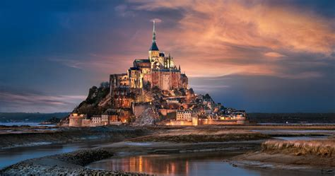
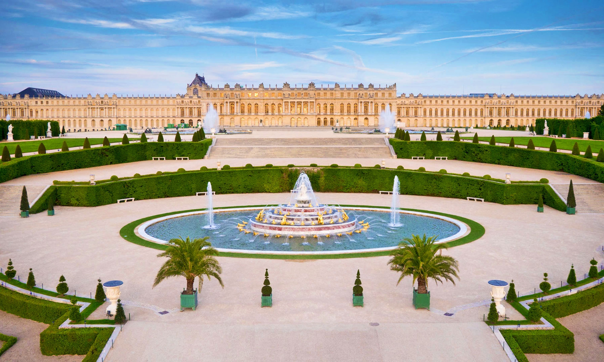

Най-впечаляващото в Франция
Франция наистина има много забележителности, но тук ще ви предлоа три от най-емблематичните и дестиации
- Париж и музеят Лувър
- Мон Сен Мишел
- Дворецът Версай
Не можете да посетите Франция, без да се потопите в сърцето на Париж. Лувърът е най-големият и посещаван музей за изкуство в света. Там ви очакват не само „Мона Лиза“, но и хилядолетия човешка история, разположени в бивш кралски дворец.
 copy.jpg)
Този приказен остров-крепост в Нормандия изглежда като излязъл от филм на "Дисни". Известен е с огромните си приливи и отливи, които го превръщат от полуостров в остров само за часове. Бенедиктинското абатство на върха му е обект на ЮНЕСКО и предлага спиращи дъха гледки към океана.

Rазположен само на 20 км от Париж, Версайският дворец е световен архитектурен шедьовър и бивша кралска резиденция. Неговият луксозен комплекс и великолепни градини представляват върхово постижение във френското парково изкуство и са сред най-известните забележителности в страната.
